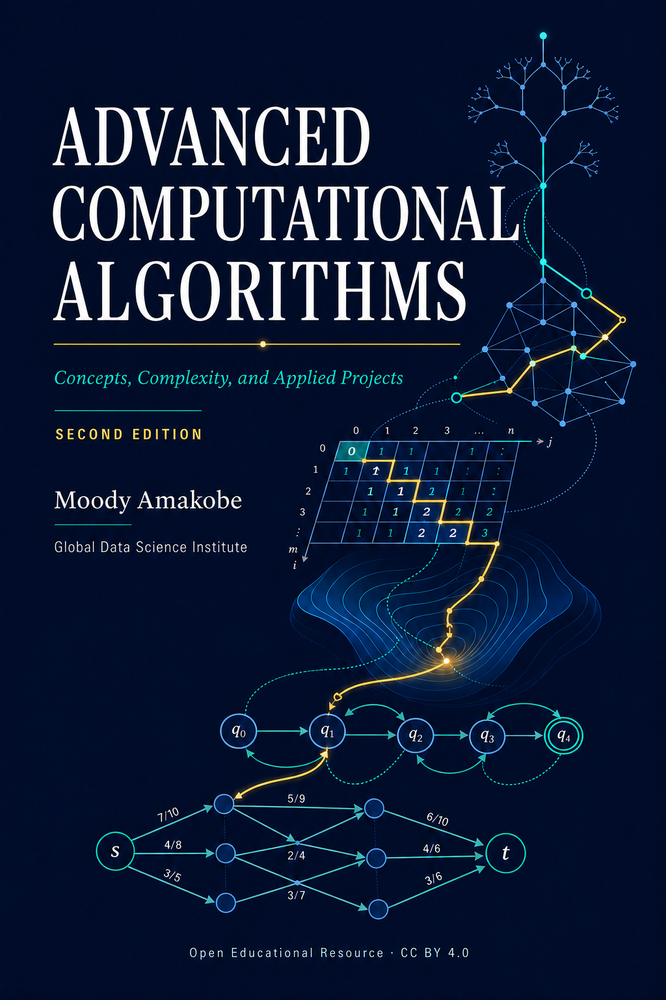

Advanced Computational Algorithms
Concepts, Complexity, and Applied Projects
Preface

Open textbook · Second Edition · 2026
Advanced Computational Algorithms
Concepts, Complexity, and Applied Projects
A rigorous, implementation-minded guide to designing, analyzing, testing, and communicating algorithms for real computational systems.
What this book covers
This Second Edition connects mathematical analysis with practical algorithm engineering. It develops the reasoning needed to select data structures, prove correctness, evaluate complexity, design experiments, and interpret performance in realistic systems.
Design
Divide-and-conquer, greedy methods, dynamic programming, randomized techniques, and approximation.
Analysis
Asymptotic reasoning, recurrences, complexity classes, correctness arguments, and trade-off analysis.
Systems
Efficient data structures, graphs, strings, numerical computation, and scalable implementation.
Practice
Benchmarking, reproducibility, project development, research synthesis, and professional communication.
Book structure
Part I
Foundations
Chapters 1–2: algorithmic thinking and divide-and-conquer.
Part II
Core Techniques
Chapters 3–6: data structures, greedy algorithms, dynamic programming, and randomization.
Part III
Complexity and Hard Problems
Chapters 7–8: computational limits and approximation.
Part IV
Advanced Topics
Chapters 9–12: graphs, strings, numerical algorithms, and advanced structures.
Part V
Applications and Professional Practice
Chapters 13–15: applications, empirical evaluation, reproducibility, and synthesis.
Who this book is for
The book is designed for advanced undergraduate and graduate students, instructors, independent learners, researchers, and practitioners who want a bridge between algorithmic theory and disciplined implementation.
Open Educational Resource
You may share and adapt this book under the Creative Commons Attribution 4.0 International license, with appropriate attribution.
Publisher
Published by the Global Data Science Institute, a research-driven organization advancing data science and computational innovation for societal good. About GDSI.
Cite this book
Amakobe, Moody. 2026. Advanced Computational Algorithms: Concepts, Complexity, and Applied Projects. Second Edition. Global Data Science Institute. CC BY 4.0.
The Second Edition ISBN has not yet been assigned and is intentionally omitted from the web citation.
Welcome
Welcome to Advanced Computational Algorithms!
This open textbook is designed for advanced undergraduate and graduate students in computer science, data science, and related disciplines.
The book explores theory and practice: algorithmic complexity, optimization strategies, and hands-on projects that build up from chapter to chapter until a final applied artifact is produced.
Abstract
Algorithms are at the heart of computing. This book guides you through advanced topics in computational problem solving, balancing rigorous theory with practical implementation.
We cover: - Complexity analysis and asymptotics
- Advanced data structures
- Graph algorithms
- Dynamic programming
- Approximation and randomized algorithms
- Parallel and distributed algorithms
By the end, you’ll have both a deep theoretical foundation and practical coding experience that prepares you for research, industry, and innovation.
Learning Objectives
By working through this book, you will be able to:
- Analyze algorithms for correctness, efficiency, and scalability.
- Design solutions using divide-and-conquer, greedy, dynamic programming, and graph-based techniques.
- Evaluate trade-offs between exact, approximate, and heuristic methods.
- Implement algorithms in multiple programming languages with clean, maintainable code.
- Apply advanced algorithms to real-world domains (finance, bioinformatics, AI, cryptography).
- Critically assess algorithmic complexity and performance in practical settings.
License
This book is published by Global Data Science Institute (GDSI) as an Open Educational Resource (OER).
It is licensed under the Creative Commons Attribution 4.0 International (CC BY 4.0) license.
You are free to share (copy and redistribute) and adapt (remix, transform, build upon) this material for any purpose, even commercially, as long as you provide proper attribution.
License details: https://creativecommons.org/licenses/by/4.0/